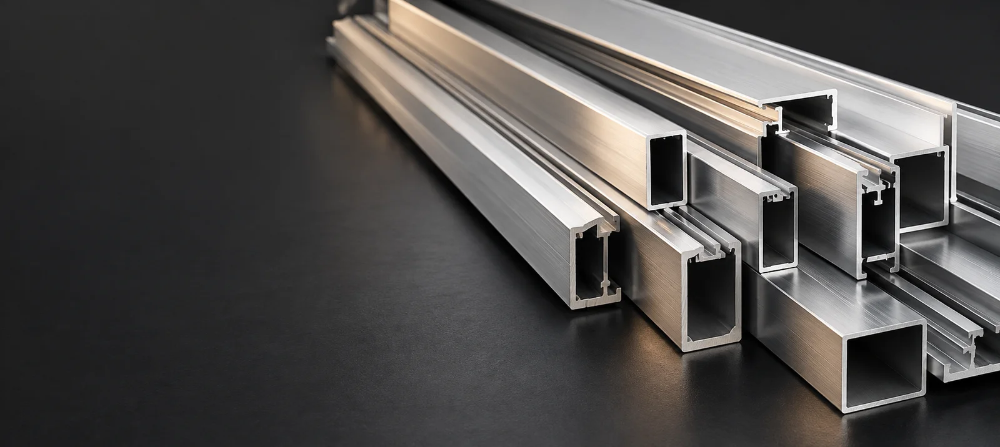

Encuentra y elige
Busca tu producto, selecciona su acabado y verifica la clave y unidad.

De un perfil al último accesorio. Reúne lo que necesitas y prepara tu cotización en un solo lugar.
Explorar el catálogoEmpieza por el material que necesitas.
Selecciona productos y cantidades.
Precio y disponibilidad se confirman al cotizar.
Con la pieza, el acabado y la cantidad correctos desde el primer mensaje.
Busca tu producto, selecciona su acabado y verifica la clave y unidad.
Indica cuánto necesitas. Puedes agregar varios productos y anotar detalles de tu proyecto.
Tu lista llega escrita a Alucard con claves, acabados y cantidades. Te confirmamos precio y disponibilidad.
No. El inventario está en proceso de actualización. La presencia de un producto en el catálogo no confirma su existencia; Alucard deberá confirmar disponibilidad y precio al atender tu solicitud.
Abre la ficha del producto y elige uno de sus acabados registrados. La clave y la unidad cambian según tu selección. Los círculos de color son orientativos; confirma el acabado antes de comprar.
Agrega la pieza que buscas y escribe las medidas o fracciones en las notas de tu solicitud. Su disponibilidad y condiciones quedan sujetas a confirmación.
No. Tu lista solo prepara una solicitud de cotización. No realiza pagos ni reserva inventario. Cuando esté lista, la envías tú por WhatsApp, o la copias o descargas.
Escríbenos, llámanos o visítanos en Tuxpan.